How to Open Files in the Microsoft Sticky Notes App
This tutorial covers:
How to Open a File:
How to Open a Window:
How to Open a Tab:
No time to scroll down? Click through these presentation slides:
Watch a video tutorial:
How to Open a File With Menu
- Step 1: First open Notepad. Go to the upper left and click “File”.

- Step 2: In the menu that opens, click “Open”. 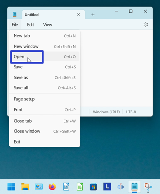
- Step 3: In the “Open” window, click to select a file, and in the lower right click the “Open” button. 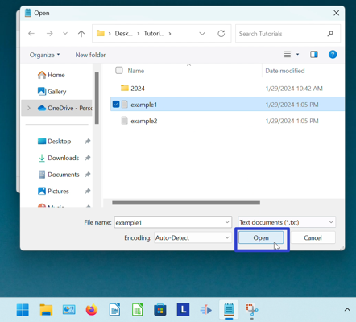
- The file opens. 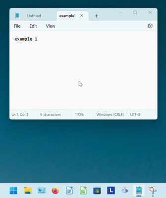
How to Open a File With Keyboard Shortcut
- Step 1: Open Notepad. On the keyboard press Ctrl + O. 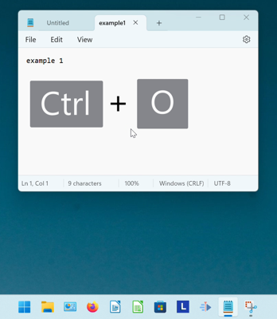
- Step 2: In the “Open” window, click to select a file, and in the lower right click the “Open” button.
- The file opens.
How to Open a Window With Menu
- Step 1: First open Notepad. Go to the upper left and click “File”.
- Step 2: In the menu that opens, click “New window”. A new Notepad window opens. 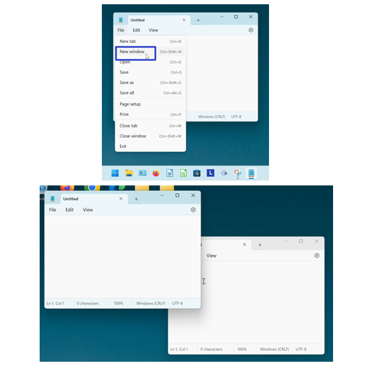
How to Open a Window With Keyboard Shortcut
- Step 1: Open Notepad. On the keyboard press Ctrl + Shift + N. A new Notepad window opens. 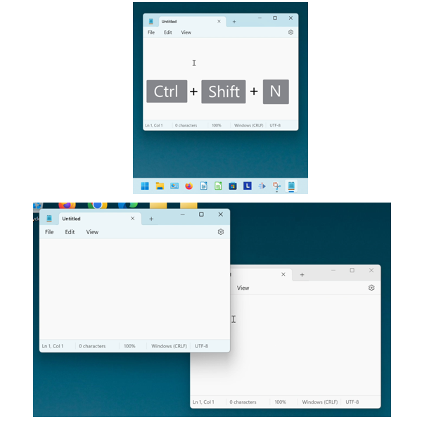
How to Open a Tab With Menu
- Step 1: First open Notepad. Go to the upper left and click “File”.
- Step 2: In the menu that opens, click “New tab”. A new tab opens in the current Notepad window.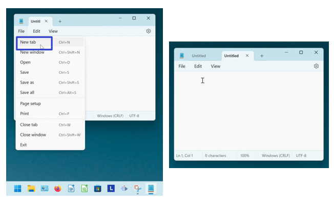
How to Open a New Tab With Keyboard Shortcut
- Step 1: Open Notepad. On the keyboard press Ctrl + N or Ctrl + T. A new tab opens in the current Notepad window. 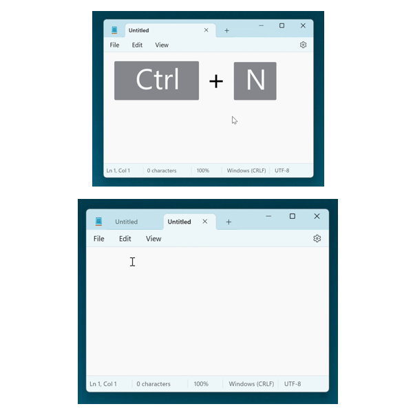
How to Open a New Tab With Click
- Step 1: First open Notepad. Go to the right side of the current tab and click the “Add new tab” or “+” button. A new tab opens in the current Notepad window. 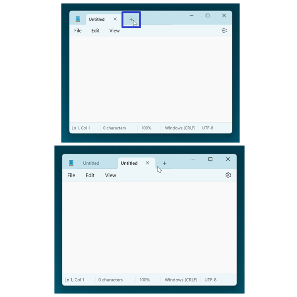
How to Open a New Tab With Right Click
- Step 1: Open Notepad. Right click the current tab. 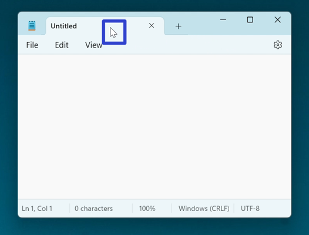
- Step 2: In the menu that opens, click “New tab”. A new tab opens in the current Notepad window. 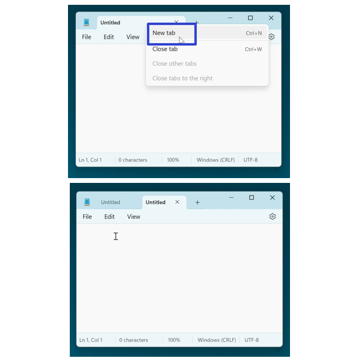
Download a free tutorial PDF.